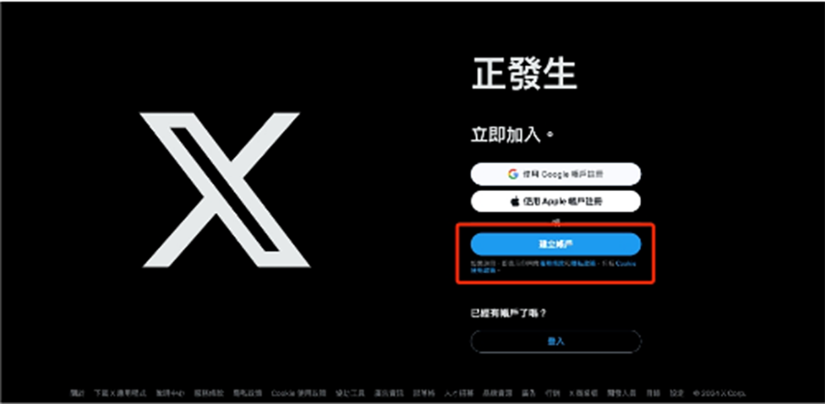
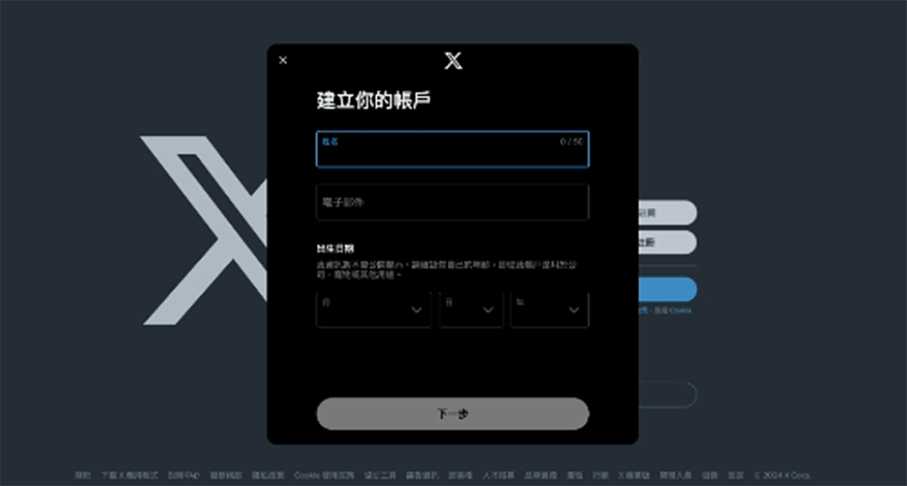
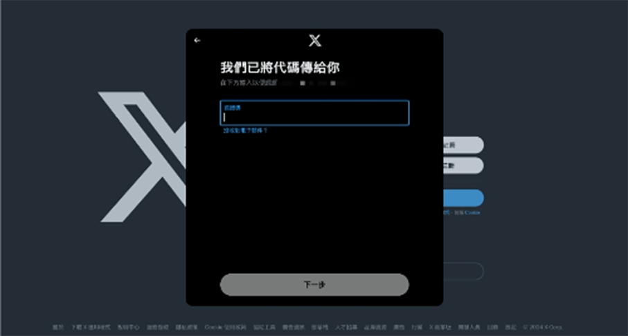
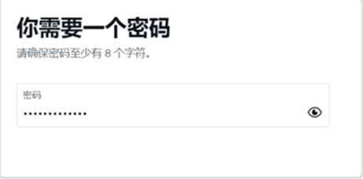

返回
欢迎查看常见问题
智慧服务，让您使用更简单

推特账户注册教程
手把手教您注册推特，您可以按照文章内容成为推特用户
推特(Twitter)是一个风靡全球的社交媒体平台汇聚了各类潮流资讯和热点讨论。跟着编编为你准备的注册教程，轻松进入这个有趣的世界！
注册步骤
Step1:选择自动线路，连接赛盾 VPN
推特作为海外社交媒体平台，CN 地区的朋友想要注册必须连接赛盾 VPN,非 CN 地区的用户无需连接可以直接注册。
目前赛盾 VPN 任意国家线路都支持注册推特，不过小编还是推荐您连接“自动选择最快网络”让快连为您选择当前速度最快的国家线路
还没有赛盾 VPN?点击此处直接下载
Step 2:打开推特 APP 或者进入网页版推特
您可以在推特APP或是网页版推特中注册账号。编编贴心为您整理好了直达链接，请根据设备类型自取:
iOS 用 CN 地区的 Apple lD 账号就可以下载，无需切换。
Android
若您的设备支持 Google Play，可直接下载Google Play 版推特。
若您的设备不支持，下载下方任意 APK 安装包即可。
MacOS 和Windows
可以直接进入网页版推特，点击此处直接跳转。
Step 3:详细注册流程
推特 APP 和网页版推特的注册流程非常相似，这边以网页版推特注册流程为例说明。
Step 3-1用浏览器无痕模式进入网页版推特
建议您使用浏览器无痕模式打开网页版推特。无痕模式不会保存浏览记录、Cookie 和缓存数据，再搭配上赛盾VPN，任何网络行为都不会留下记录。
Step 3-2 选择适合您的注册方式
推特提供三种注册方式，若您有 Google 账号或 Apple 账号，可以直接选用对应的注册方式。若您没有，请点击“建立账户”Button，通过邮箱注册。

Step 3-3 填写注册资料
推特注册时需要您填写自己的姓名、电子邮件、出生日期。其中姓名不需要写现实生活中的真名哦避免信息泄露~小编建议选择虚拟的昵称或者称号就好啦。

Step 3-4用邮箱收取验证码
点击下一步后，推特会给您的注册邮箱发送验证码，在邮箱中找到验证码邮件，来填写即可。如果找不到邮件，记得也看看垃圾邮箱中是否有哦~

Step 3-5 设置密码
填入验证码下一步，推特会要求您为此账户设置密码，根据要求设置密码即可完成注册~

完成以上5个步骤，推特账号就注册好啦！
注:若您在下载和使用过程中有任何问题，您随时可以发送邮件给 {{kfEmail}}，将由专业的客户服务人员帮助您获取到最新版本的软件。